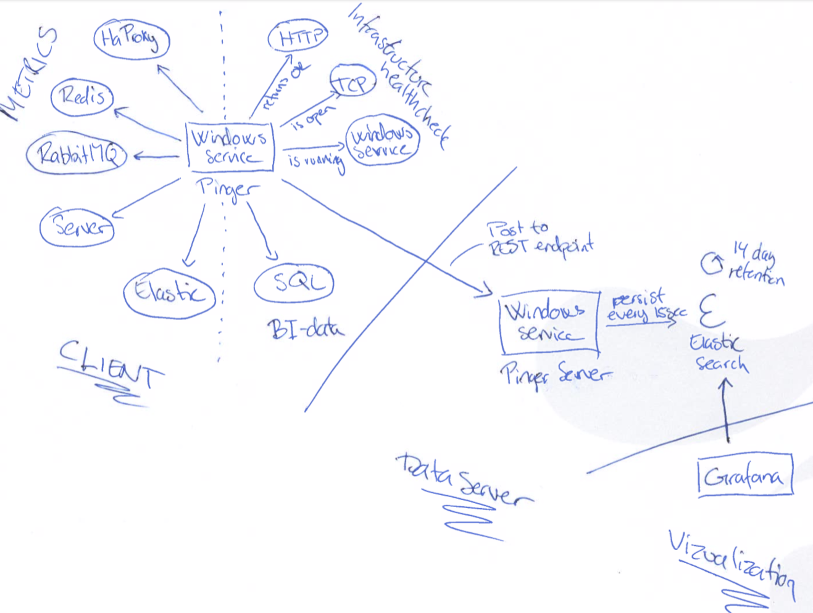
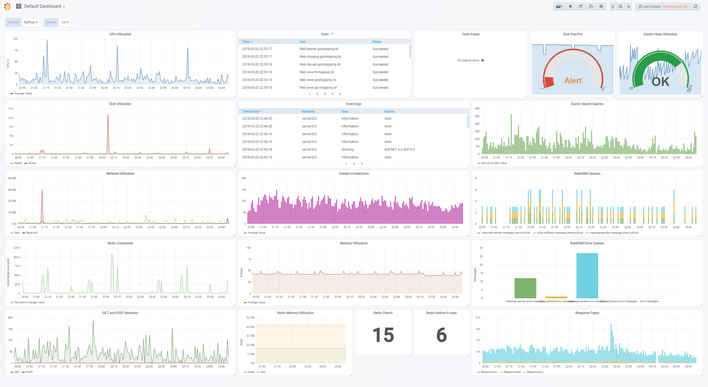

Small project containing two parts: a client installed on the server we need to test and get metrics about, and a windows service server installed on a central server that contains ElasticSearch, Kibana and/or Grafana for visualization.
Basically I needed some pretty simple metric about how the server acted, and I needed it without paying a high price in the sense of money. A lot of the good tools offer a lot of functionality that I don't need or use, so instead of buying a took to get my metric, I build a lightweight client.
The big part of this is the client. The client reads two configuration files:
{
"Logging.MinimumLevel": "Debug",
"Logging.File.MinimumLevel" :"Warning",
"Logging.Console.MinimumLevel": "Verbose",
"Logging.Elastic.MinimumLevel": "Debug",
"Logging.Elastic.Url": "http://localhost:9200",
"Logging.Elastic.IndexFormat": "customername_log_{0:yyyy.MM}",
"Logging.Slack.MinimumLevel": "Error",
"Logging.Slack.Url": "",
"Logging.Sentry.Dsn": "",
"Logging.CoolSms.Key": "",
"Logging.CoolSms.FromName": "",
"Logging.CoolSms.Phonenumbers": "",
"MPE.Pinger.Configuration.Path": "./Configuration/connections.json",
"MPE.Pinger.Fail1.Pause.Secs": "5",
"MPE.Pinger.Fail2.Pause.Secs": "60",
"MPE.Pinger.Fail3.Pause.Secs": "180",
"MPE.Pinger.WaitBetweenTest.Secs": "30",
"MPE.Pinger.Report.Inteval.Sec": "60",
"MPE.Pinger.Metric.Inteval.Sec": "5",
"MPE.Pinger.TimeSpan.From": "00:01",
"MPE.Pinger.TimeSpan.To": "23:59",
"MPE.Pinger.ApiKeys.Path": "keys.txt",
"MPE.Pinger.Server.Host": "localhost",
"MPE.Pinger.Server.Port": "8080",
"MPE.Pinger.RetentionInDays": "5"
}
Logging.*
Configuration to define the different way of logging. Normally used to define how it reports the failed alerts.
MPE.Pinger.Configuration.Path
Path to the connections configuration file containing the tests and what metrics it needs to extract
MPE.Pinger.Fail?.Pause.Secs How may seconds it needs to pause after the first, second or third failed test
MPE.Pinger.WaitBetweenTest.Secs
How may seconds between the different test executions
MPE.Pinger.Report.Inteval.Sec
How often it reports its metrics to the report server
MPE.Pinger.Metric.Inteval.Sec
How often it gathers metrics
MPE.Pinger.TimeSpan.From
Start time for alerting period in case of failed test
MPE.Pinger.TimeSpan.To
End time for alerting period in case of failed test
MPE.Pinger.ApiKeys.Path
Path to newline separated file containing valid API keys - used if the execution mode is "Server"
MPE.Pinger.Server.Host
Host for the reporting server
MPE.Pinger.RetentionInDays
How long it persist data in ElasticSearch
This configuration file contains how it will gather the data and what tests it should execute while on the server. It also defines the naming for the different objects when persisted to storage, along with the report endpoint and api key.
{
"Host": "MpeLocal",
"RestEndpoint": "http://localhost:8080",
"ApiKey": "7dcb7c7a-8d9f-4b56-9ce0-52fa40085b35",
"Metrics": [
{
"Alias": "CpuPct",
"Category": "Processor",
"Name": "% Processor Time",
"Instance": "_Total"
}
],
"EventLogging": {
"MinimumLevel": "Information",
"Categories": [
"Application",
"System"
]
},
"Connections": [
{
"Alias": "Redis-Connect",
"Target": "127.0.0.1",
"Port": 6379,
"Type": "Tcp"
}
],
"Redis": {
"Host": "127.0.0.1",
"Port": 6379,
"Metrics": [
"total_connections_received",
"total_commands_processed",
"expired_keys",
"used_memory",
"used_memory_peak",
"connected_clients",
"used_cpu_sys",
"uptime_in_seconds",
"uptime_in_days",
"maxmemory"
]
},
"RabbitMQ": {
"Host": "localhost",
"Port": 15672,
"Username": "guest",
"Password": "guest",
"Fields": [
"messages_ready$",
"messages_unacknowledged$",
"messages$",
"deliver$",
"ack$",
"publish$"
]
},
"ElasticSearch": {
"Host": "89.221.166.59",
"Port": 9200,
"Fields": [
"indices.search",
"jvm.mem"
]
},
"HaProxy": {
"Endpoint": "https://localhost:9000/haproxy_stats",
"Username": "admin",
"Password": "admin",
"Fields": [
"*.*.(?:hrsp_1xx|hrsp_2xx|hrsp_3xx|hrsp_4xx|hrsp_5xx)",
"*.*.(?:hrsp_1xx|hrsp_2xx|hrsp_3xx|hrsp_4xx|hrsp_5xx)",
"*.*.(?:hrsp_1xx|hrsp_2xx|hrsp_3xx|hrsp_4xx|hrsp_5xx)"
]
}
}


So after some cluster went down at my hosting company I started to see that there were no more data being saved in Elastic. So i updated my server code including it to write debug notes when calling the elastic save REST endpoint. And i got the following back:
{
"error": {
"root_cause": [{
"type": "cluster_block_exception",
"reason": "blocked by: [FORBIDDEN/12/index read-only / allow delete (api)];"
}
],
"type": "cluster_block_exception",
"reason": "blocked by: [FORBIDDEN/12/index read-only / allow delete (api)];"
},
"status": 403
}
So to fix this, please fire the following against elastic
> curl -Method Put -H @{'Content-Type'='application/json'} http://localhost:9200/_all/_settings -Body '{"index.blocks.read_only_allow_delete": null}'
A new feature for this could be to respond correctly to the failing POST request to ElasticSearch REST endpoint